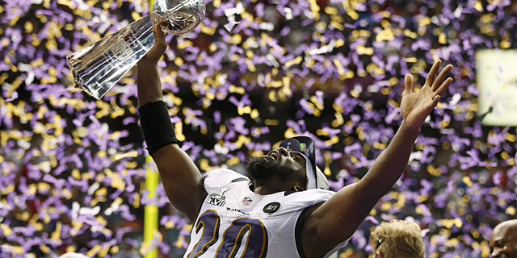
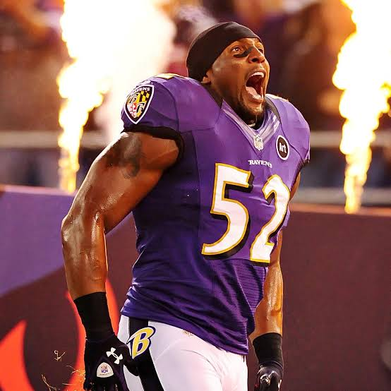
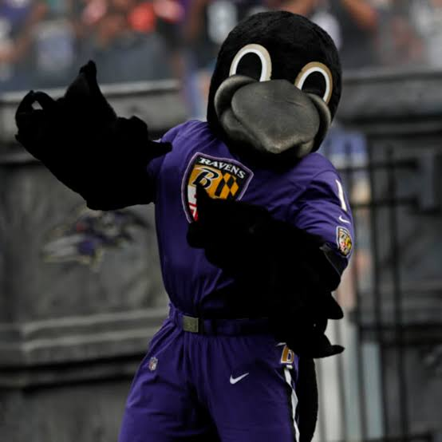

Baltimore Ravens
Historia del equipo
Los Baltimore Ravens son un equipo relativamente joven, fundado en 1996. Han sido una fuerza dominante en la NFL, especialmente en defensa.
Super Bowls ganados
Los Baltimore Ravens han ganado 2 Super Bowls en los años 2000 y 2012.
Mejor jugador de la historia
El mejor jugador en la historia de los Ravens es el linebacker Ray Lewis, considerado uno de los mejores defensores de la historia de la NFL.
Mascota del club
La mascota oficial de los Baltimore Ravens es Poe, un cuervo que lleva el nombre del famoso escritor Edgar Allan Poe.